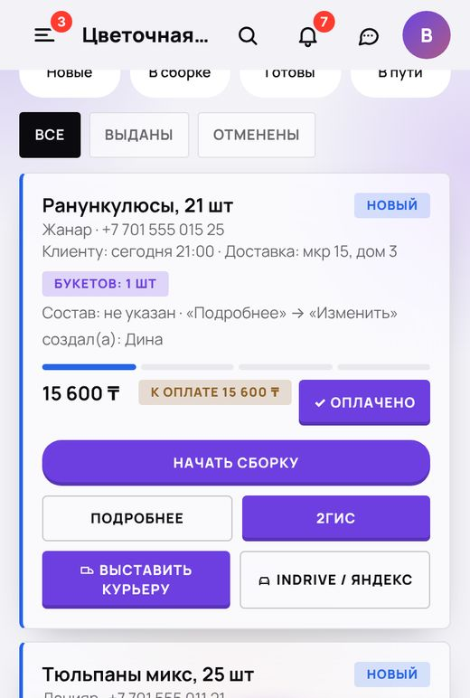
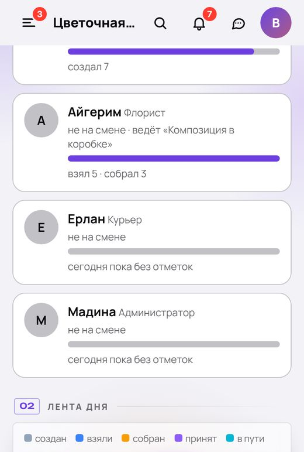
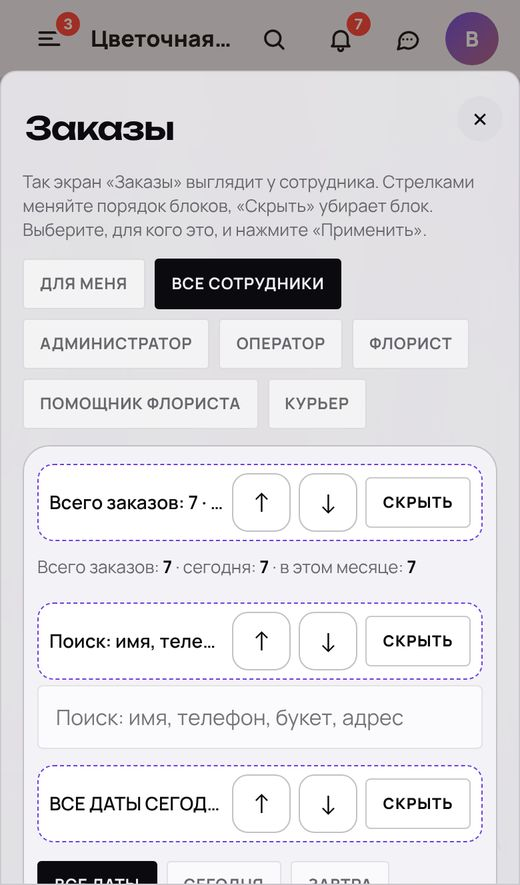

Сотрудники видят, что собирать, что везти и кому ответить. Вы видите, кто что делает и сколько заработано. Работает с телефона, на русском и казахском.
Новый, собирается, готов, в пути, выдан. Флорист видит только свою очередь, оператор принимает и отмечает оплату, курьер видит свои доставки. Никто не спрашивает «кто взял?».

Карточки сотрудников: на смене или нет, какой заказ ведёт, сколько сделал сегодня. В ленте дня каждый заказ полоской по времени, задержки красным. Без ручных отчётов.

Главная из блоков: переставляйте и прячьте лишнее. Любой экран можно настроить для себя, для роли или для всех сотрудников. В нижнее меню ставьте разделы, которые нужны чаще всего.

Ежемесячная оплата и разовое подключение. Тариф подберём вместе под ваш магазин.
— ₸ в месяц
Подключение: — ₸
— ₸ в месяц
Подключение: — ₸
— ₸ в месяц
Подключение: — ₸
Чаты WhatsApp и Instagram включаются официально после проверки вашего бизнеса в Meta, обычно это несколько недель. Пока идёт проверка, магазин работает через ссылки WhatsApp.
За сообщения WhatsApp Meta берёт плату напрямую по своим тарифам. Для небольшого магазина это обычно несколько тысяч тенге в месяц.
Нет. Сайт открывается в браузере телефона, его можно поставить на экран как приложение.
Данные каждого магазина хранятся отдельно от других магазинов. Доступ сотрудников по ролям. Данные можно забрать по запросу.
Доставку можно вести через inDrive или Яндекс. Свои курьеры включаются отдельно, когда нужны.
Расскажите, где сейчас ведёте клиентов и заказы, подскажем, как перенести.
На русском и казахском, язык переключается одним нажатием.
Напишите нам: покажем систему на примере вашего магазина.
Ответим по-русски или по-казахски.